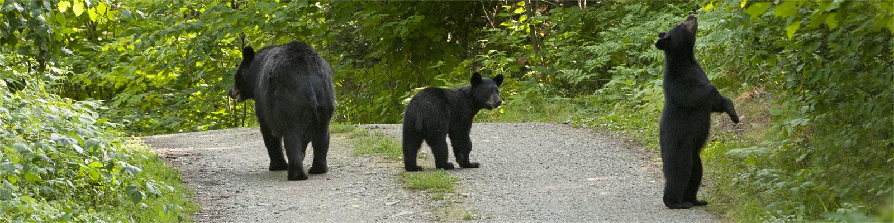

Bears are the coolest animals ever, and here's why:
Here is a list of some of the bears that live in North America.
- Brown Bear
- American black bear
- Kodiak Bear
- Short-faced bears
- Kermode Bear
- Alaska Peninsula brown bear
- Tremarctos
This is a short list, there are many more but for the sake of time, these were the first ones to show up.
Here are some bear facts in order of coolest fact to least coolest:
- Bears can run up to 40mph
- Bears can walk for short distances on their hind legs
- Bears are highly intelligent animals. They can cover their tracks and camouflage themselves to sneak up on prey
- Bears grieve over others.
Here are some resources to learn more about bears and rescues that you can donate to.